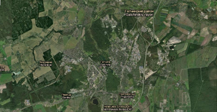
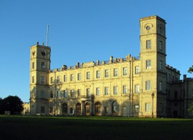
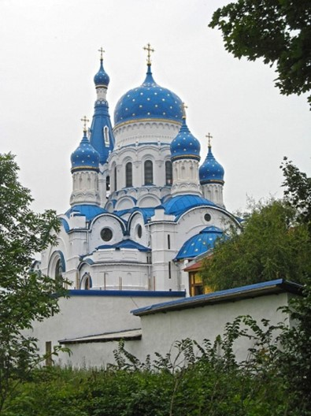
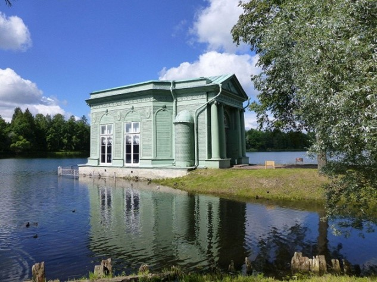
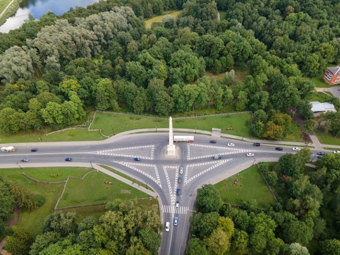
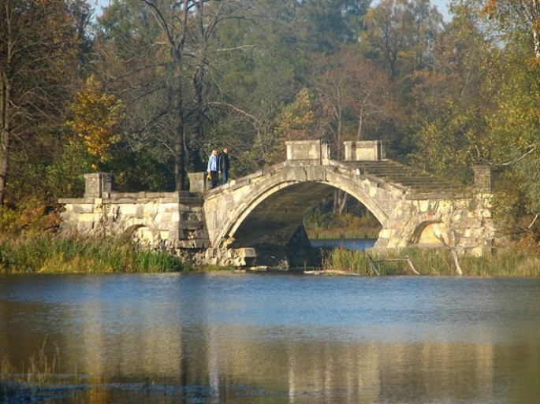

Вид со спутника

Га́тчина — город (с 1796 года) в России, город воинской славы России (с апреля 2015). Находится в юго-западной части области, в 42 км от центра Санкт-Петербурга. Население — 91 719 чел. (2024 г.) Климат Гатчины атлантико-континентальный. Морские воздушные массы обусловливают сравнительно мягкую зиму и умеренно-тёплое, иногда прохладное лето. Исторический центр города, а также музей-заповедник «Гатчина» включены в список всемирного наследия ЮНЕСКО. С 3 апреля 2023 года Гатчина официально является административным центром (столицей) Ленинградской области.
Гатчина – это знаменитый пригород Санкт-Петербурга, где династия Романовых обосновала свою царскую резиденцию. Свою историю Гатчина ведет с начала XVIII века, когда государь Петр I указом повелел построить здесь усадьбу и подарил ее своей любимой сестре – Наталье Алексеевне. После смерти царевны усадьба несколько раз переходила от одних владельцев к другим, пока в 1765 году ее не приобрела императрица Екатерина II, пожаловавшая ее своему фавориту графу Григорию Орлову. Граф развернул в Гатчине активное строительство – пригласил выдающегося итальянского зодчего Антонио Ринальди. После смерти графа Орлова Гатчина становится резиденцией Павла I.
Павел обосновался в Гатчине на долгие 18 лет. В 1796 году Павел взошел на российский престол и пожаловал Гатчине статус города и собственный герб. С 1801 года по 1828 год дворец принадлежал вдове Павла I — Марии Федоровне, после нее, вплоть до 1855 года, хозяином дворца был Николай I, следующими владельцами дворца были Александр II, Александр III и Николай II.
В 1918 году в Гатчинском дворце был открыт музей. В годы Великой Отечественной войны дворцово-парковому ансамблю Гатчины был причинен серьезный урон. Гатчинский дворец и парки были сильно разрушены, многие парковые постройки и сооружения – полностью уничтожены. Сразу после окончания войны в Гатчине начались сложные восстановительные работы, которые продолжаются и сейчас. Постепенно уникальному Гатчинскому комплексу возвращают его былое великолепие.
| Описание | Изображение |
|---|---|
| Большой Гатчинский дворец — любимое место отдыха императорской семьи, построенный в 1766 году графом Орловым. |  |
| Гатчинский Покровский собор — крупнейший храм Ленинградской области, строился с 1895 по 1914 годы. |  |
| Павильон Венеры — построен при Павле I в 1791 году, проект вдохновлен одноименным сооружением во Франции. |  |
| Коннетабль в Гатчине — площадь с обелиском, построенная по указу Павла I после посещения французских парков. |  |
| Горбатый мостик в Дворцовом парке — одно из главных украшений парка, с великолепными видами на Белое озеро. |  |
Гатчина, славный город наш,
Среди лесов и светлых дней,
Твой дух живет в сердцах людей,
История в каждом шаге, в каждом краше.
Здесь замок стоит, как страж,
Хранит тайны вековых лет,
В его стенах — наш светлый след,
Судьбы переплетены, как в сказке, как в раже.
Поля и реки, чистый взор,
Природы дар, что нас ведет,
Здесь каждый уголок живет,
Собой наполняя сердца наш двор.
Гатчина, гордость для потомков,
Мы будем помнить и любить,
Твой светлый путь всегда хранить,
В единстве, в мире, в нашем доме, в нашем веке!